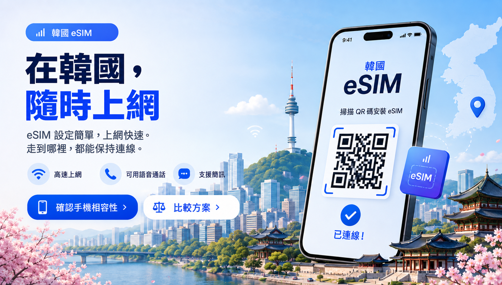
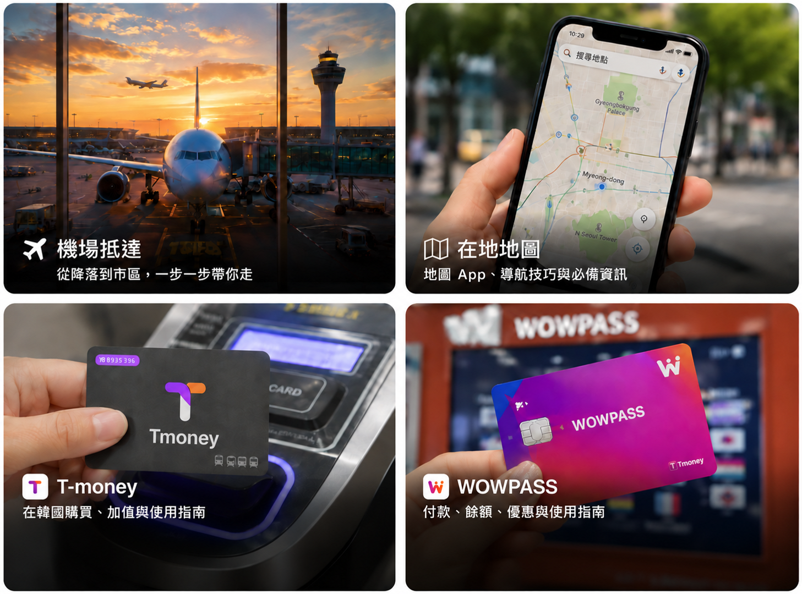

從這趟旅行最期待的事開始。
有人為美食而來，有人想購物、逛美妝、體驗夜生活，也有人只是想在嚮往已久的街區走走。先想清楚最期待的是什麼，其他行程就比較容易安排。

韓系美妝 K-Beauty
在韓國買美妝，很容易越逛越複雜，因為大型店鋪的選擇遠超過多數旅客的需要。真正有用的是知道去哪裡逛、不同街區有什麼差別，以及哪些旗艦店值得特別繞過去。
探索韓國 K-Beauty 美妝先決定幾件事，抵達當天就輕鬆許多
飛往韓國前，不必把整份行程排好。但有三件事值得提早決定：住在哪裡、手機如何上網，以及怎麼從機場前往第一間住宿。

住在哪裡，影響的不只是飯店本身
與其只看房價挑飯店，住在順路的地方往往更能省下時間。地鐵交通固然重要，從機場抵達、深夜返回、提著購物袋走路，以及行程需要多常橫跨市區，也都值得一起考量。
找到合適的住宿區域
在需要用手機之前，先把上網安排好
落地後幾乎馬上就會用到行動網路：查地圖、找飯店、傳訊息、確認預訂或翻譯。eSIM 對許多旅客來說很方便，不過出發前最好先確認手機是否支援，以及何時啟用。
閱讀韓國 eSIM 指南
抵達韓國後的第一個小時
領完行李後，多數旅客需要的其實就是幾件事：一支能上網的手機、支付市區交通的方式、在韓國好用的地圖，以及清楚的進城路線。這些都安排妥當後，通常就不用再在機場待太久。
- 讓手機連上網路韓國 eSIM 指南
- 購買或儲值 T-moneyT-money 指南
- 開啟 Naver Map 或 KakaoMap韓國地圖 App
- 選擇適合前往你飯店的機場交通路線機場交通指南